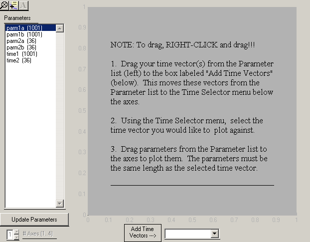

The time series viewer is a tool for interactive exploration of time series data. It was designed with flight test data in mind, but could be used for other applications.
This viewer allows you interactively visualize time series data in your MATLAB workspace. It provides limited analysis capabilities, too. For the purposes of this application, "time series data" refers to parameters that vary only as a function of time. Specifically, this application is restricted to working with vectors (i.e. 1xN or Nx1).
I am very interested in what users think about this application. Please email me (shirsch@mathworks.com) with any comments, descriptions of how you are using it, or suggestions. While this demo will likely never be part of MATLAB, your comments may help to influence our future development efforts!
This is developed as a demonstration, and contains no warranty!
Ensure that the directory containing TimeSeriesViewer is on your MATLAB path.
TimeSeriesViewer
You have no valid time series in your workspace. Running in demo mode
All time series in your workspace will be automatically loaded into the TimeSeriesViewer and displayed in the Parameters list along the left side of the application. The length of each series is displayed in parentheses next to the name. If you do not have any valid time series, some sample data will be loaded instead.
Variables must meet the following requirements to be valid time series:
The TimeSeriesViewer defines two types of time series:
Time vectors and parameters both meet the criteria defined in the previous section. The user defines the Time Vectors from a list of all time series. Parameters are plotted against their corresponding Time Vectors.
The first step is to define the Time Vector(s) (independent variables). Drag all Time Vectors from the Paramaters list on the left side of the application to the box labeled "Add Time Vectors" at the bottom of the application. This moves the selected vectors from the Parameters list to the Time Selector menu below the axes. (NOTE: You must RIGHT-CLICK to drag!). You can repeat this step at any time.
Select the Time Vector from the popup menu that you would like to plot against first.
You can now right-click and drag parameters from the Parameter list to the axes to your heart's content. You can only plot Parameters that are the same length as the selected Time Vector. Attempts to plot a Parameter that is not compatible with the selected Time Vector turn the icon briefly into a NO symbol. For convenience, both the Parameters List and the Time Series Selector display the lengths of their contents.